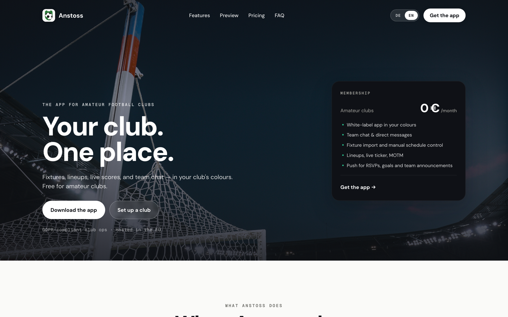
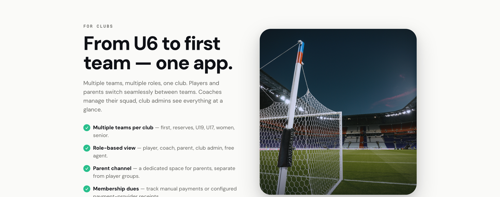
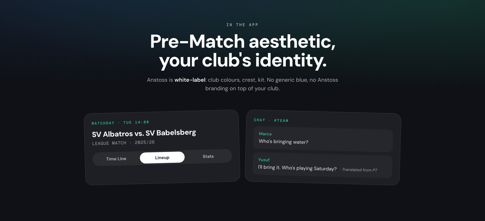
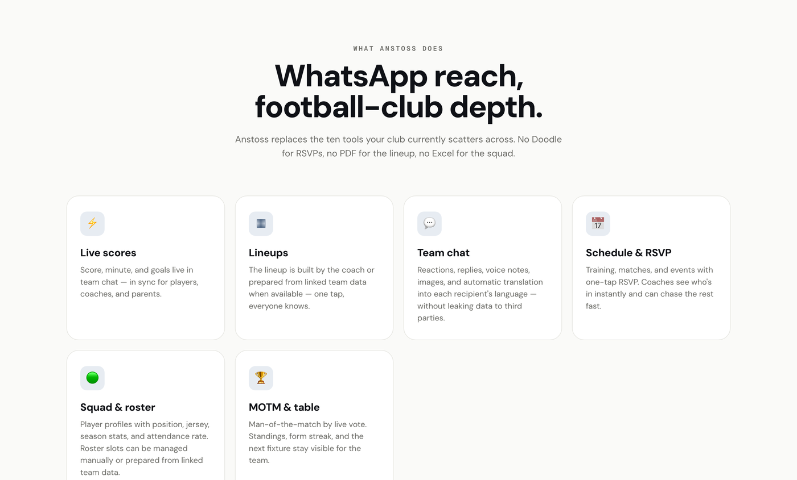

Amateur football clubs run on a pile of tools that were never built for them: WhatsApp for chat, Doodle for RSVPs, a PDF for the lineup, a spreadsheet for the table. Anstoss replaces all of it with one white-label app in the club's own colours. I founded it, ran the UX end to end, and wrote the code, for Android and iOS.

The live product and marketing site, at anstoss.io.
Anstoss began as my own Sunday-morning admin. I help run an amateur side, so the tool-chaos was lived, not researched from a distance. To turn that into a brief I did three things: mapped every tool a club touches across a single match week, ran informal interviews with coaches and club admins at other clubs, and read the support threads where volunteers ask each other how to keep a squad organised. Three patterns came back every time.
One volunteer owns comms, attendance, lineup, and the kit. Any tool that adds work, however small, gets dropped by the next fixture.
The lineup lives in a screenshot, RSVPs in a poll, the table in a browser tab. Nothing is a source of truth, so the same questions get re-asked in the group every week.
People show up for the crest, not the software. Any club tool that looks generic, or like someone else's brand, never feels like theirs.
Give a club one place to run match day, in its own identity, without asking a volunteer to learn software. Every time a new feature tempted its way in, I checked it against these six questions before it earned a place.
Volunteer coaches, players, and parents at amateur and youth clubs.
One white-label app for chat, fixtures, lineups, RSVP, and the table.
The current ten-tool stack is fragile, generic, and re-built every season.
Across a match week: midweek planning through Sunday kickoff.
On phones, often pitch-side with one hand and bad signal.
Role-based views, a multi-team data model, and an overlay for one-tap actions.
The hardest constraint was role. A coach, a player, a parent, and a club admin open the same app and need almost opposite things. I designed around role-based views so each person sees only what is theirs, with a separate, safer space for parents of under-age players.
Builds the lineup, sets the schedule, posts announcements, runs match day from one screen.
Sees fixtures, RSVPs in one tap, reads the team chat, votes for man of the match.
A dedicated channel, kept separate from the player group, for under-age teams and logistics.
Manages multiple teams, roles, and membership across the whole club from one account.
The make-or-break flow is the first ten minutes. If a coach cannot stand up a club and get players in before they lose patience, nothing else matters. I designed setup to lean on what a club already has: phone numbers. A coach creates the club, invites by number, and players are auto-matched into the right team.
Underneath, I modelled the data around clubs from the start, not single teams: multiple teams per club, role-based access, a parent channel, and membership dues that track manual payments or a provider. It is the kind of decision that is invisible when it works and impossible to retrofit when it does not.

Because belonging was the deepest insight, the headline design decision was white-label by default: club colours, crest, and kit, with no generic blue and no Anstoss branding on top of someone else's identity. The in-app surfaces, match day and team chat, are designed to feel like the club's own product, down to translating messages so a mixed-language squad can still read the group.

Match day and team chat, rendered in each club's own colours.
The second decision was restraint. The feature set stays narrow on purpose, live scores, lineups, team chat, schedule and RSVP, squad and roster, and man-of-the-match, because every extra feature is one more thing a volunteer has to ignore. Nothing here is a roadmap promise; it is what the app does today.

Writing the code myself changed the design. When a feature was mine to build and not just to spec, the ones that only worked in a mockup got cut before they wasted a sprint. The design held because it had to compile.
The signature feature surfaces key actions on top of other apps. Designing it meant living inside real Android constraints, overlay permissions, draw-over behaviour, and battery. It had to be useful in one tap and invisible the rest of the time.
AI surfaces squad insights but never picks the lineup. I designed it as suggestions a coach accepts or ignores, so the bench decision stays with the person who has to answer for it on Sunday.
Getting to the store meant app signing, deep-link verification, and a review queue, the unglamorous work that decides whether a design ever reaches a phone. Coding it with AI build tools kept that loop short enough to learn from.
Because I had built it, I could put it straight into a real club's hands and watch. I dogfooded Anstoss across a run of actual fixtures, tracking two things: where onboarding stalled, and whether the overlay helped or got in the way. That loop drove the changes that mattered.
The first coach I onboarded never finished the manual roster, he typed three names and switched back to WhatsApp. So invites moved to phone numbers and auto-matching, and the next setup ran without me in the room.
Early versions surfaced too much. Watching it crowd the screen during an actual match pushed it down to the few actions a coach reaches for mid-game.
What I would change: the white-label promise cuts both ways. Per-club theming is the reason clubs adopt it, but it also means there is no single screenshot of "Anstoss" to show, and every club starts from a blank crest. If I ran it again I would design a stronger default identity that a club edits down, rather than one it has to build up from nothing.
Anstoss is shipped on Android and iOS, free for amateur clubs, with a white-label build per club and the floating overlay and AI features in production. It replaced the ten-tool stack with one app, and proved out a design-engineering way of working: research the problem, design the system, write the code, and let real use reshape it.